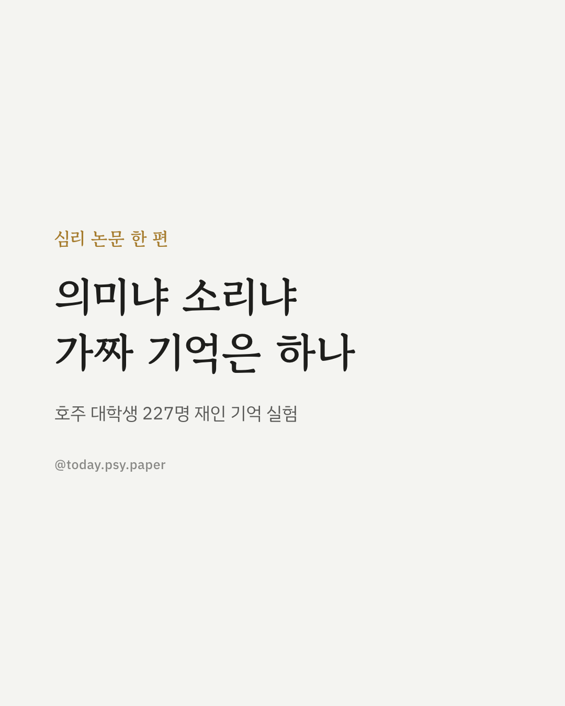
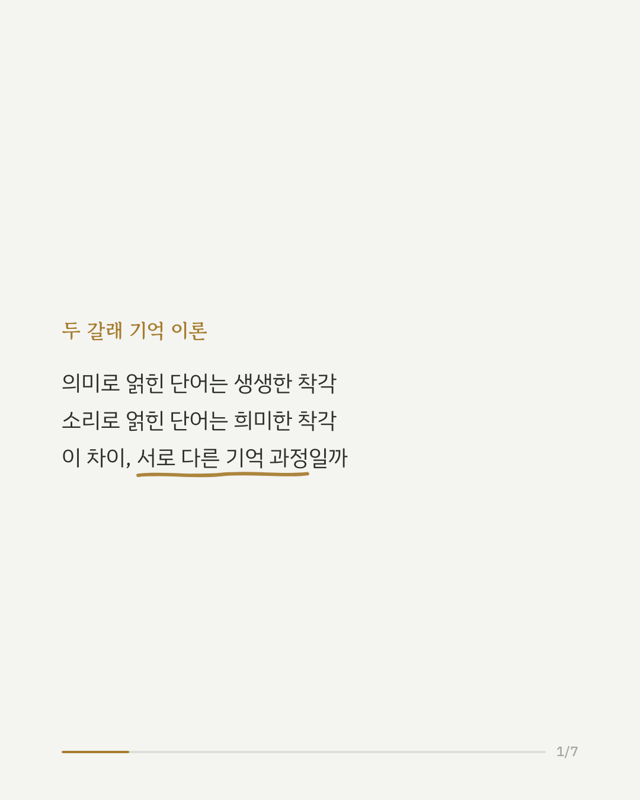
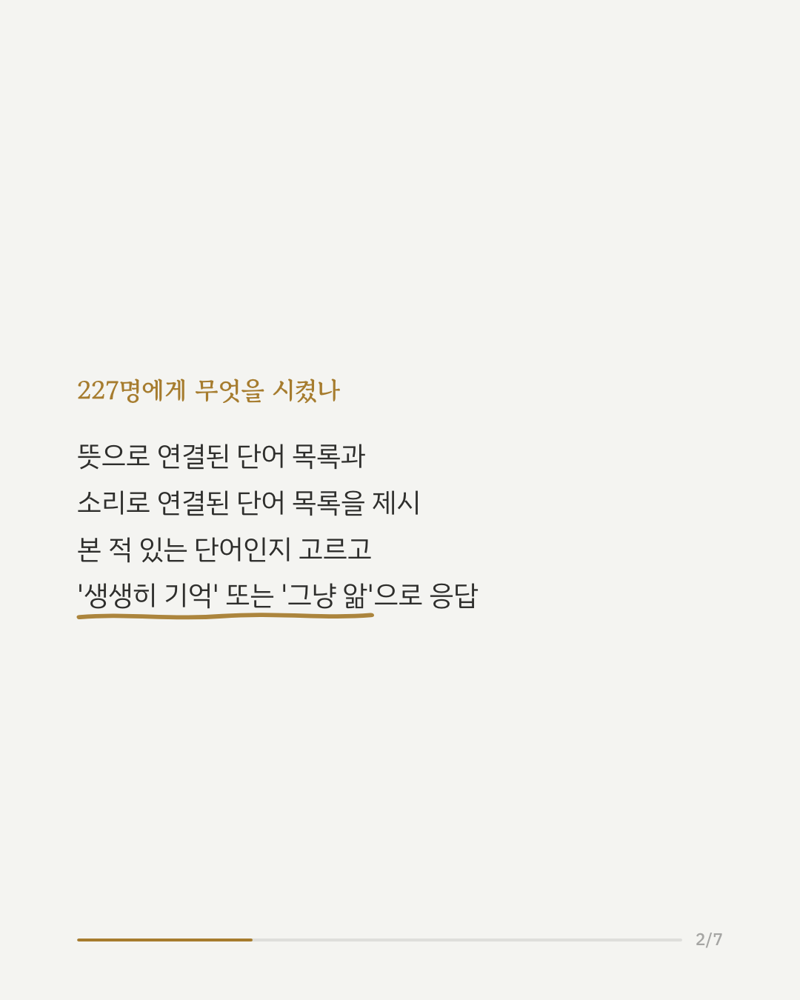
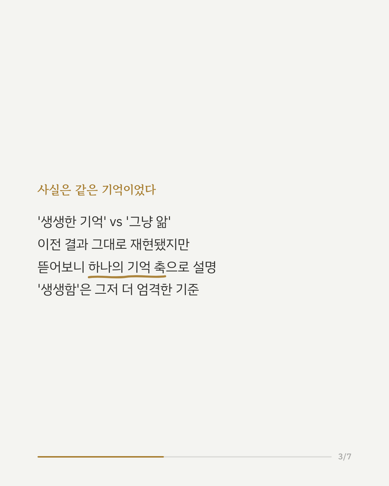
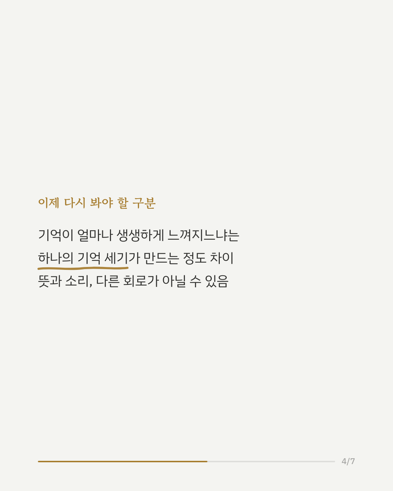
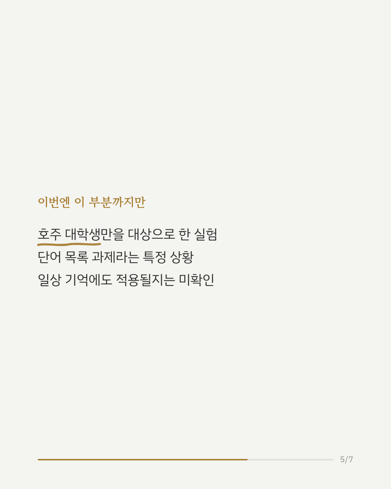
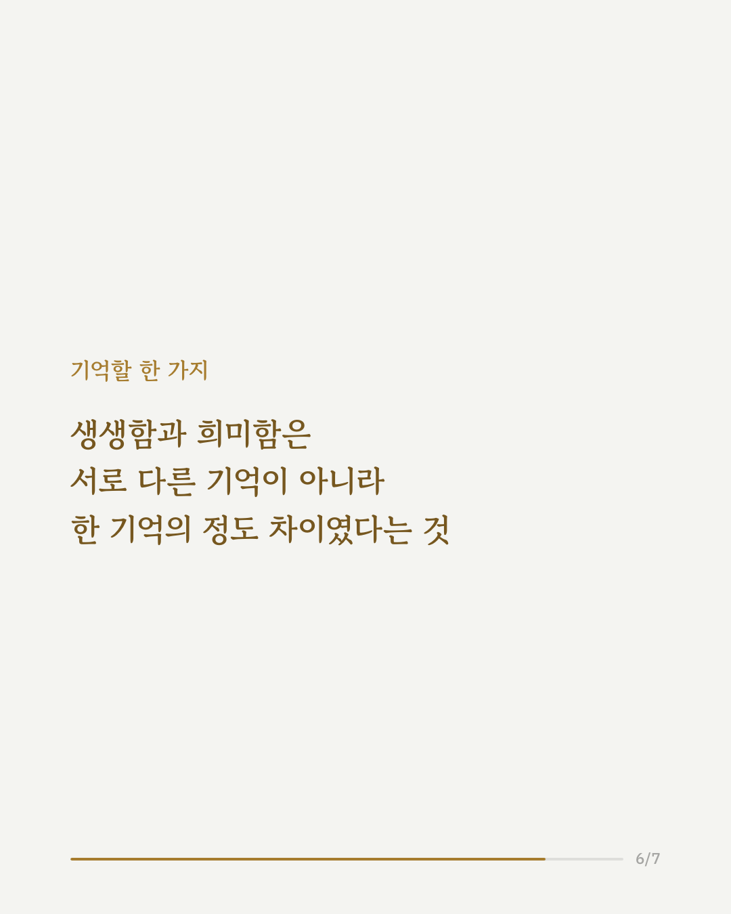
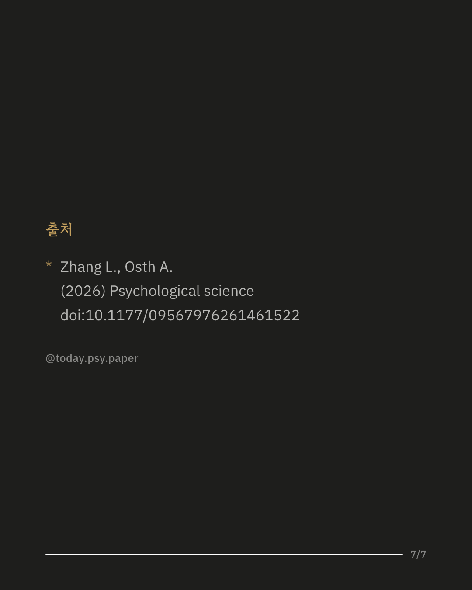

단어 목록을 본 뒤, 본 적 없는 단어를 봤다고 착각하는 경우가 있습니다. 심리학에서는 이를 '가짜 기억'이라 부르며 오래전부터 연구해온 현상입니다. 이 가짜 기억은 두 방식으로 만들어집니다. 단어들이 뜻으로 이어져 있을 때(예: 침대, 휴식, 피곤 → 잠), 그리고 소리로 이어져 있을 때입니다. 학계에서는 뜻으로 연결된 가짜 기억은 '생생하게 기억난다'는 반응이 많고, 소리로 연결된 가짜 기억은 '그냥 알 것 같다'는 반응이 많다는 점을 근거로, 두 기억이 서로 다른 심리 과정에서 비롯된다고 봐 왔습니다. 호주 대학생 227명을 대상으로 이 주장을 다시 검증한 결과, '생생한 기억' 대 '그냥 아는 기억'의 차이 자체는 재현됐지만, 통계 모델로 뜯어보니 두 반응 모두 하나의 기억 세기 축 위에서 설명됐습니다. '생생하다'는 반응은 별개의 과정이 아니라, 그만큼 더 엄격한 기준을 적용한 결과였습니다. 이 연구는 대학생 표본을 대상으로 한 단어 목록 과제에 기반하고 있어, 일상적인 기억 경험에도 그대로 적용되는지는 추가 확인이 필요합니다. 출처: Psychological Science (2026), 'A Single Dimension of Memory Strength Underlies Semantic and Phonological False Memories' #인지심리학 #기억연구 #심리학연구 #가짜기억 #인지과학
python3 publish.py 42640836